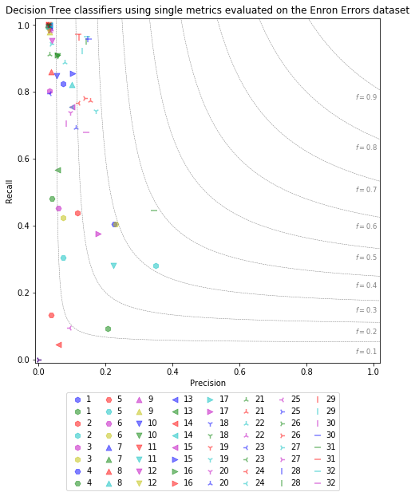
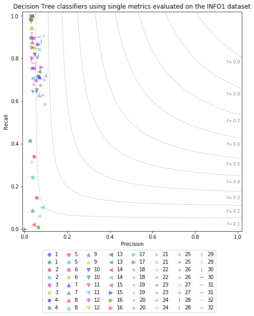
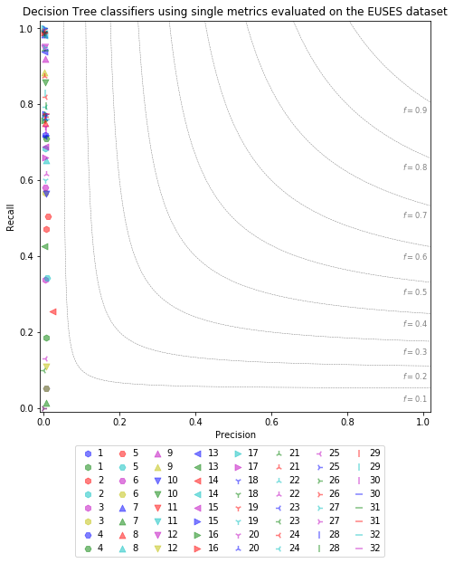
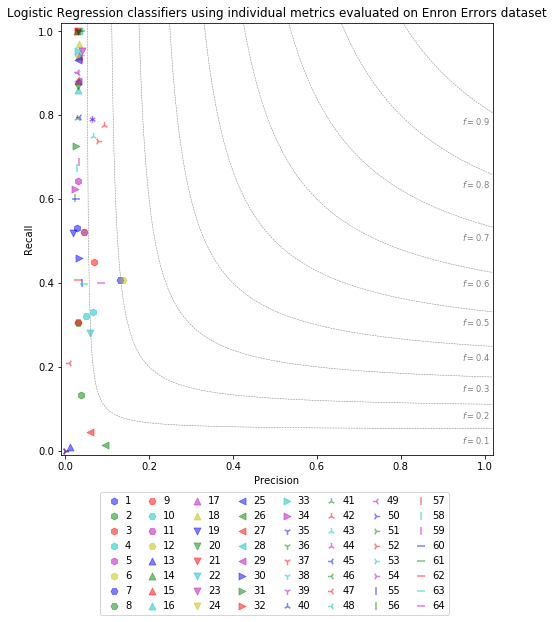
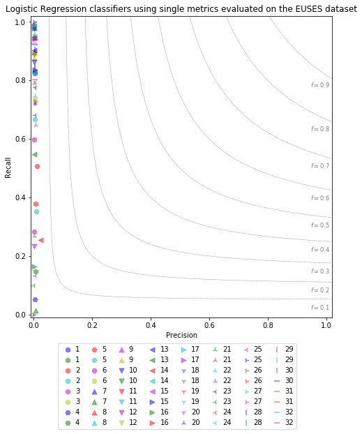
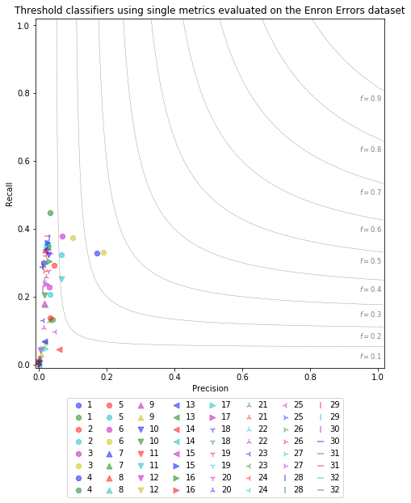
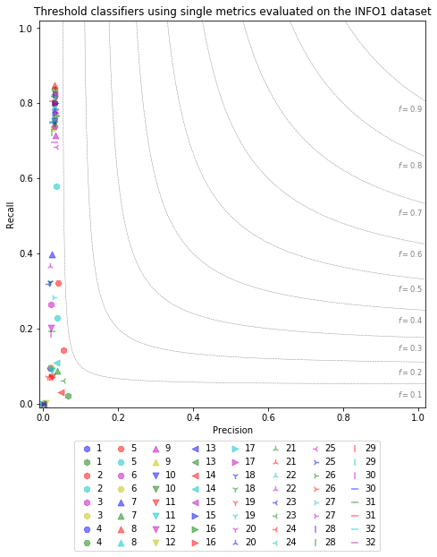
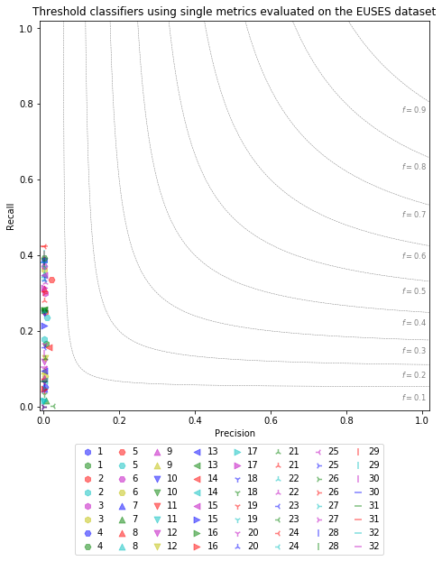

Description
In Study 1, we evaluate the performance of individual metrics when used to train certain ML model types to predict faulty spreadsheet cells. On this page, we provide high-resulution plots that show these results for each of the three different classifier types (Decision Tree, Logistic Regression, Threshold Classifier) trained and evaluated on each of our datasets (Enron Errors, Info1, Euses).
Plot Type
To compare model prediction performances, we employ a custom plot type, the Precision / Recall / F1 plot, that combines precision, recall, and f1-performance for a specific evaluated model. The evaluation result of each trained model is illustrated by a symbol in the plot area. For any given symbol in the plot, its horizontal position corresponds to the precision score of the evaluated model. Likewise, its vertical precision corresponds to the Recall score of the evaluated model. Lastly, the symbol's position in relation to radial lines indicate the model's achieved F1 measure.
The numbers in the legend correspond to the indices given in our metric catalog. Hexagons represent classifiers using metrics computed per cell, triangles represent formula cell-based metrics, inverted triangles are formula metrics, and bars indicate worksheet-based metrics.
Plots
Plots are organized into groups based on the used ML model (Decision Tree, Logistic Regression, Threshold) and on which dataset the respective model was trained and evaluated on.
Decision Trees



Logistic Regression models



Threshold classifiers


